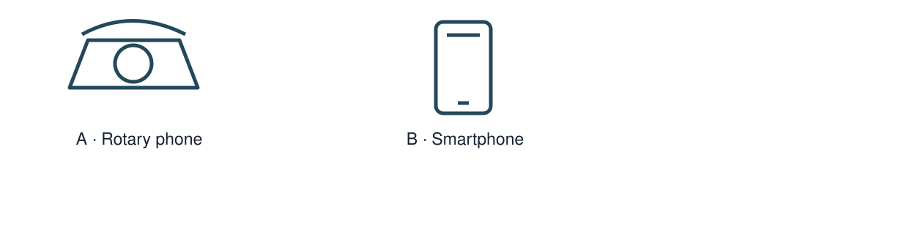
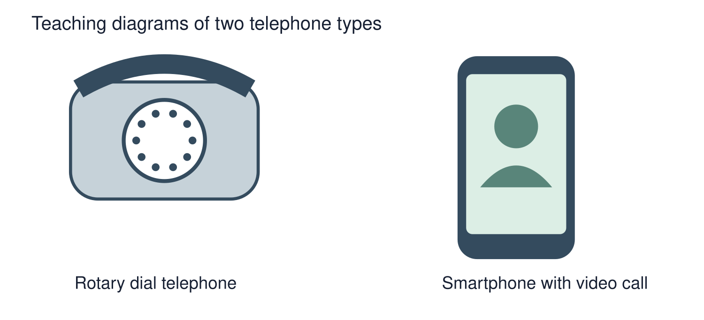

Arrival choices
Previous lesson reminder:

Start with 1 and 2. Try 3 and 4 when ready. Reading and exact scribing are available.
1 Which comes first: Wednesday or Friday?
Support: Use the reminder strip or talk it through with an adult.
2 Which meaning fits past?
Support: Choose: A time before now OR The time we are in now.
3 What function do both phones share?
Support: Use the model evidence anchor B or read one relevant card together.
4 Does newer always mean better for everyone?
Support: Give a reason when ready.
Stretch: use a precise example or explain which detail supports your answer.
Evidence cards
Read, point or listen. Keep the source label with any detail you use.
A A fictional week
Monday: choose a club activity. Wednesday: practise the activity. Friday: share what was made. The words Monday, Wednesday and Friday supply the order.
Source: Authored classroom case
Limit: This example does not describe every person or place.
B Telephone comparison
A rotary telephone and a smartphone both support conversations over distance. A smartphone can also show a video call; a rotary dial selects numbers differently.
Source: Authored comparison of familiar objects
Limit: A newer object is not automatically better for every person or purpose.
C Photo enquiry
Use the paired local photographs supplied with this unit. Read the captions and dates. Point to one feature in each image before deciding what changed.
Source: See photograph captions and credits
Limit: A camera angle or season can make features appear different; a photograph alone may not explain why.
D Questions worth asking
Who used this object? When was this photo made? A dated catalogue entry can help with time; a user’s account can help with experience.
Source: Authored classroom case
Limit: This example does not describe every person or place.
Visual resource
Use this visual with the evidence cards and enquiry questions.

Shared investigation
1. Pair-match a rotary telephone and smartphone.
2. Sort visible differences from functions they share.
Work with a partner or adult, or use your own table. One person suggests; the other checks the evidence. Swap after one turn. Passing is allowed.
Use the evidence cards and any visual sheet. Follow the two shared steps above, then record one decision.
Support: Show two choices. Read one short instruction. Point, match or say a word, then add a reason when ready.
Further challenge: Explain why a different user might prefer one object for a particular purpose.
Supported independent task
Complete this route only. Compare old and new objects.
1. Make an object comparison card.
2. Record one change and one thing unchanged.
3. Add a caption based on a diagram or an object you can inspect.
Support: Show two choices. Read one short instruction. Point, match or say a word, then add a reason when ready. Complete the organiser one space at a time. Both objects ___. One difference is ___.
An adult may read or scribe your exact response. They should not choose the answer.
Standard independent task
Complete this route only. Compare old and new objects.
1. Make an object comparison card.
2. Record one change and one thing unchanged.
3. Add a caption based on a diagram or an object you can inspect.
Support: Both objects ___. One difference is ___.
Check the required evidence and revise one detail.
Stretch independent task
Complete this route only. Compare old and new objects.
1. Make an object comparison card.
2. Record one change and one thing unchanged.
3. Add a caption based on a diagram or an object you can inspect.
4. Explain why a different user might prefer one object for a particular purpose.
Support: Choose the evidence independently. Use the frame only if it helps.
Explain why a different user might prefer one object for a particular purpose.
Exit ticket
Choose a response mode. You may give your answers privately to an adult.
What function do both phones share?
Does newer always mean better for everyone?
Support: Both objects ___. One difference is ___.
Further challenge: Explain why a different user might prefer one object for a particular purpose.